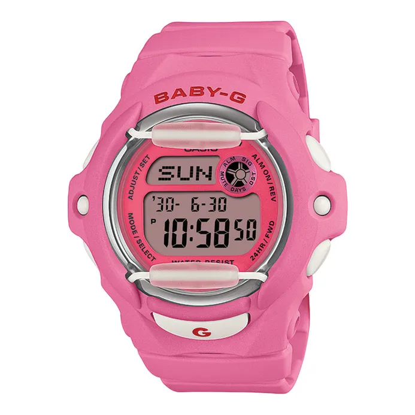

Rp 1.779.000
Seri "Cherry On Top" menghadirkan desain manis dengan warna pink cerah khas Baby-G. Cocok untuk aktivitas harian dengan ketahanan tinggi serta fitur digital lengkap.
| Model No. | BG-169CH-4JF |
|---|---|
| Case Size | 45.9 × 42.6 × 15.4 mm |
| Weight | 46 g |
| Case / Bezel | Resin |
| Band | Pink Resin Band |
| Glass | Mineral Glass |
| Water Resistance | 200 m / 20 Bar |
| Features | Shock Resistant, EL Backlight, World Time, Stopwatch, Countdown Timer, 5 Daily Alarms, Full Auto Calendar |